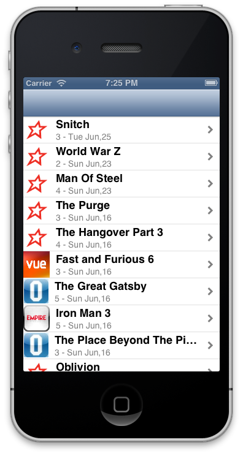

So I'm slowing converting an App from the Treehouse tutorial
http://teamtreehouse.com/library/ios-development/build-a-blog-reader-iphone-app
I'm pulling my Films Blog instead.
Just changing the pic depending on the Cinema I went to, gotta work on the Stars next, think I might use the idea from http://www.raywenderlich.com/1797/how-to-create-a-simple-iphone-app-tutorial-part-1 for showing the stars.
